# Install and load required packages
pacman::p_load(ggplot2, tidyverse)
# Load libraries
library(ggplot2)
library(dplyr)
library(scales)
library(ggridges)Ship Performance Visualization

# Install and load required packages
pacman::p_load(ggplot2, tidyverse)
# Load libraries
library(ggplot2)
library(dplyr)
library(scales)
library(ggridges)# Load the dataset
ship_data <- read_csv("data/Ship_Performance_Dataset.csv")
# Glimpse of the dataset
glimpse(ship_data)Rows: 2,736
Columns: 18
$ Date <date> 2023-06-04, 2023-06-11, 2023-06-18, 2023-06-2…
$ Ship_Type <chr> "Container Ship", "Fish Carrier", "Container S…
$ Route_Type <chr> "None", "Short-haul", "Long-haul", "Transocean…
$ Engine_Type <chr> "Heavy Fuel Oil (HFO)", "Steam Turbine", "Dies…
$ Maintenance_Status <chr> "Critical", "Good", "Fair", "Fair", "Fair", "F…
$ Speed_Over_Ground_knots <dbl> 12.59756, 10.38758, 20.74975, 21.05510, 13.742…
$ Engine_Power_kW <dbl> 2062.9840, 1796.0574, 1648.5567, 915.2618, 108…
$ Distance_Traveled_nm <dbl> 1030.9436, 1060.4864, 658.8741, 1126.8225, 144…
$ Draft_meters <dbl> 14.132284, 14.653083, 7.199261, 11.789063, 9.7…
$ Weather_Condition <chr> "Moderate", "Rough", "Moderate", "Moderate", "…
$ Cargo_Weight_tons <dbl> 1959.0179, 162.3947, 178.0409, 1737.3853, 260.…
$ Operational_Cost_USD <dbl> 483832.35, 483388.00, 448543.40, 261349.61, 28…
$ Revenue_per_Voyage_USD <dbl> 292183.27, 883765.79, 394018.75, 87551.38, 676…
$ Turnaround_Time_hours <dbl> 25.86708, 63.24820, 49.41815, 22.40911, 64.158…
$ Efficiency_nm_per_kWh <dbl> 1.4551789, 0.2903614, 0.4995945, 0.7029057, 1.…
$ Seasonal_Impact_Score <dbl> 1.4156533, 0.8856478, 1.4058132, 1.3707043, 0.…
$ Weekly_Voyage_Count <dbl> 1, 6, 9, 1, 8, 7, 3, 6, 8, 2, 9, 4, 3, 7, 7, 3…
$ Average_Load_Percentage <dbl> 93.76925, 93.89537, 96.21824, 66.19370, 80.008…# Data cleaning and preparation
ship_data_clean <- ship_data %>%
mutate(
Year = year(Date),
Month = month(Date),
YearMonth = format(Date, "%Y-%m"),
# Handle "None" values
across(where(is.character), ~na_if(., "None")),
Profit_USD = Revenue_per_Voyage_USD - Operational_Cost_USD
) %>%
filter(complete.cases(.)) # Remove rows with NA values
# Adding the Profit_Status column and converting it to a factor
ship_data_clean <- ship_data_clean %>%
mutate(Profit_Status = ifelse(Profit_USD >= 0, "Profitable", "Loss")) %>%
mutate(Profit_Status = as.factor(Profit_Status))# Time Series Analysis
time_analysis <- ship_data_clean %>%
group_by(YearMonth) %>%
summarise(
Average_Revenue = mean(Revenue_per_Voyage_USD, na.rm = TRUE),
Average_Cost = mean(Operational_Cost_USD, na.rm = TRUE),
Voyage_Count = n()
) %>%
pivot_longer(cols = c(Average_Revenue, Average_Cost),
names_to = "Metric",
values_to = "Amount")# Custom theme definition
theme_custom <- theme_minimal() +
theme(
plot.title = element_text(size = 10, face = "bold", margin = margin(b = 10)),
plot.subtitle = element_text(size = 10, color = "grey50"),
axis.title = element_text(size = 9),
axis.text = element_text(size = 7),
legend.position = "right",
legend.title = element_text(size = 9),
legend.text = element_text(size = 7),
panel.grid.major = element_line(color = "grey90"),
panel.grid.minor = element_blank()
)
# Color palettes
palette_main <- c("#7CB9E8", "#B8B8FF", "#FFE5B4", "#0077BE", "#6F00FF", "#FFD700")
palette_status <- c("Profitable" = "#7CB9E8", "Loss" = "#FFB6C1")
# Time Series Analysis Plot
ggplot(time_analysis, aes(x = YearMonth, y = Amount, color = Metric, group = Metric)) +
geom_line(size = 1) +
geom_point(size = 1) +
theme_custom +
scale_color_manual(values = c("Average_Revenue" = "#7CB9E8", "Average_Cost" = "#FFB6C1")) +
labs(
title = "Revenue and Cost Trends Over Time",
subtitle = "Monthly Average Comparison",
x = "Year-Month",
y = "Amount (USD)"
) +
scale_y_continuous(labels = scales::dollar_format()) +
geom_text(aes(label = scales::dollar(Amount),colour = "black"), vjust = -1.5, size = 2)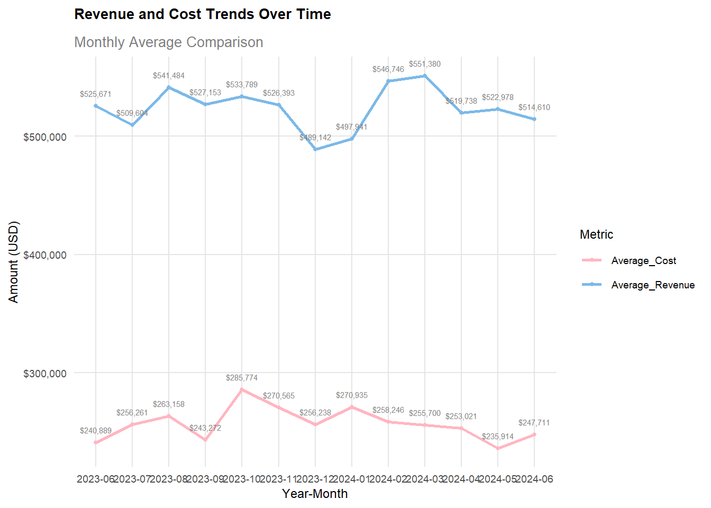
glimpse(ship_data_clean)Rows: 2,127
Columns: 23
$ Date <date> 2023-06-11, 2023-06-18, 2023-06-25, 2023-07-0…
$ Ship_Type <chr> "Fish Carrier", "Container Ship", "Bulk Carrie…
$ Route_Type <chr> "Short-haul", "Long-haul", "Transoceanic", "Tr…
$ Engine_Type <chr> "Steam Turbine", "Diesel", "Steam Turbine", "D…
$ Maintenance_Status <chr> "Good", "Fair", "Fair", "Fair", "Fair", "Criti…
$ Speed_Over_Ground_knots <dbl> 10.38758, 20.74975, 21.05510, 13.74278, 18.616…
$ Engine_Power_kW <dbl> 1796.0574, 1648.5567, 915.2618, 1089.7218, 217…
$ Distance_Traveled_nm <dbl> 1060.4864, 658.8741, 1126.8225, 1445.2812, 723…
$ Draft_meters <dbl> 14.653083, 7.199261, 11.789063, 9.727833, 14.9…
$ Weather_Condition <chr> "Rough", "Moderate", "Moderate", "Moderate", "…
$ Cargo_Weight_tons <dbl> 162.3947, 178.0409, 1737.3853, 260.5951, 1912.…
$ Operational_Cost_USD <dbl> 483388.00, 448543.40, 261349.61, 287718.38, 18…
$ Revenue_per_Voyage_USD <dbl> 883765.79, 394018.75, 87551.38, 676121.46, 776…
$ Turnaround_Time_hours <dbl> 63.24820, 49.41815, 22.40911, 64.15823, 47.476…
$ Efficiency_nm_per_kWh <dbl> 0.2903614, 0.4995945, 0.7029057, 1.3313431, 1.…
$ Seasonal_Impact_Score <dbl> 0.8856478, 1.4058132, 1.3707043, 0.5833834, 1.…
$ Weekly_Voyage_Count <dbl> 6, 9, 1, 8, 7, 3, 6, 2, 9, 4, 3, 7, 7, 2, 4, 3…
$ Average_Load_Percentage <dbl> 93.89537, 96.21824, 66.19370, 80.00858, 53.174…
$ Year <dbl> 2023, 2023, 2023, 2023, 2023, 2023, 2023, 2023…
$ Month <dbl> 6, 6, 6, 7, 7, 7, 7, 8, 8, 8, 8, 9, 9, 9, 10, …
$ YearMonth <chr> "2023-06", "2023-06", "2023-06", "2023-07", "2…
$ Profit_USD <dbl> 400377.79, -54524.66, -173798.23, 388403.08, 5…
$ Profit_Status <fct> Profitable, Loss, Loss, Profitable, Profitable…# Profit/Loss Analysis by Ship Type
ggplot(ship_data_clean, aes(x = Ship_Type, fill = Profit_Status)) +
geom_bar(position = "fill") +
scale_fill_manual(values = palette_status) +
theme_custom +
labs(
title = "Profit/Loss Distribution by Ship Type",
subtitle = "Proportion of Profitable vs Loss-making Voyages",
x = "Ship Type",
y = "Proportion",
fill = "Profit Status"
) +
scale_y_continuous(labels = scales::percent_format()) +
geom_text(aes(label = scales::percent(..count../tapply(..count.., ..x.., sum)[..x..])),
stat = "count",
position = position_fill(vjust = 0.5),
size = 2)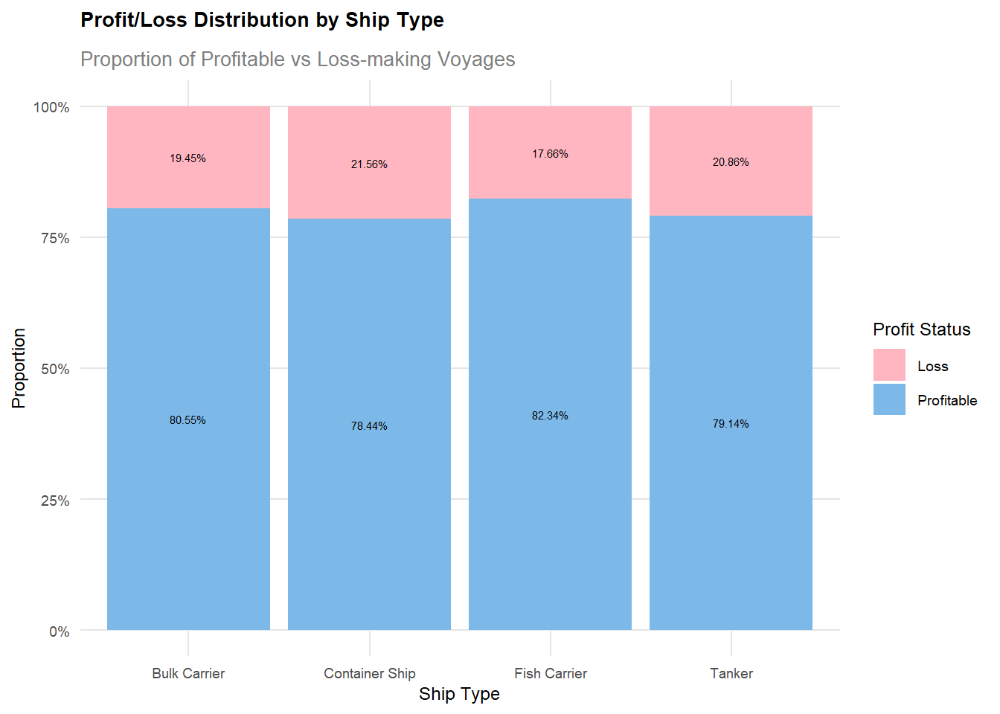
# Profit Distribution by Ship Type
ggplot(ship_data_clean, aes(x = Ship_Type, y = Profit_USD, fill = Profit_Status)) +
geom_boxplot() +
scale_fill_manual(values = palette_status) +
theme_custom +
labs(
title = "Profit Distribution by Ship Type",
subtitle = "Box Plot showing Profit/Loss Ranges",
x = "Ship Type",
y = "Profit (USD)",
fill = "Profit Status"
) +
scale_y_continuous(labels = scales::dollar_format()) +
stat_summary(fun = mean, geom = "point", shape = 20, size = 2, fill = "white") +
stat_summary(fun = median, geom = "text", aes(label = round(..y.., 0)), vjust = -0.5, color = "black", size = 2) # Adjusted size for median label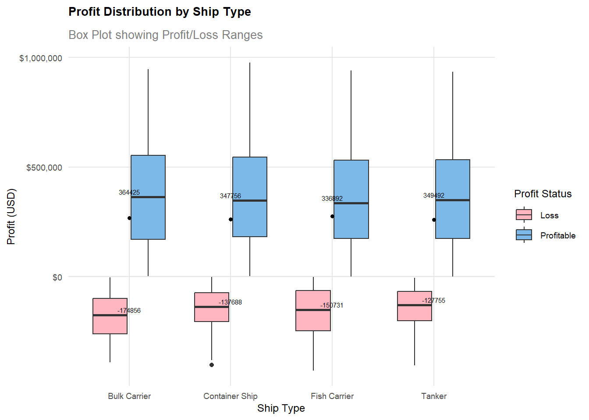
# Profit Distribution by Engine Type
ggplot(ship_data_clean, aes(x = Engine_Type, y = Profit_USD, fill = Profit_Status)) +
geom_boxplot() +
scale_fill_manual(values = palette_status) +
theme_custom +
labs(
title = "Profit Distribution by Engine Type",
subtitle = "Box Plot Analysis of Engine Performance",
x = "Engine Type",
y = "Profit (USD)",
fill = "Profit Status"
) +
scale_y_continuous(labels = scales::dollar_format()) +
stat_summary(fun = mean, geom = "point", shape = 20, size = 2, fill = "white") +
stat_summary(fun = median, geom = "text", aes(label = round(..y.., 0)), vjust = -0.5, color = "black", size = 2) # Adjusted size for median label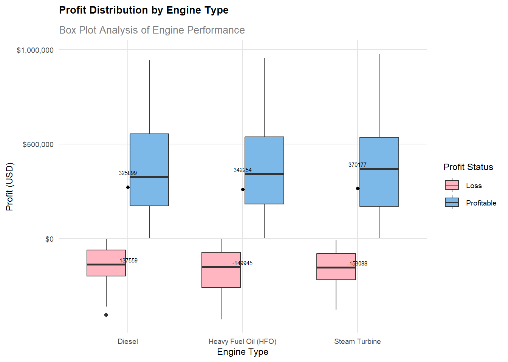
# Profit Distribution by Route Type
ggplot(ship_data_clean, aes(x = Route_Type, y = Profit_USD, fill = Profit_Status)) +
geom_boxplot() +
scale_fill_manual(values = palette_status) +
theme_custom +
labs(
title = "Profit Distribution by Route Type",
subtitle = "Analysis of Route Profitability",
x = "Route Type",
y = "Profit (USD)",
fill = "Profit Status"
) +
scale_y_continuous(labels = scales::dollar_format()) +
stat_summary(fun = mean, geom = "point", shape = 20, size = 2, fill = "white") +
stat_summary(fun = median, geom = "text", aes(label = round(..y.., 0)), vjust = -0.5, color = "black", size = 2) # Adjusted size for median label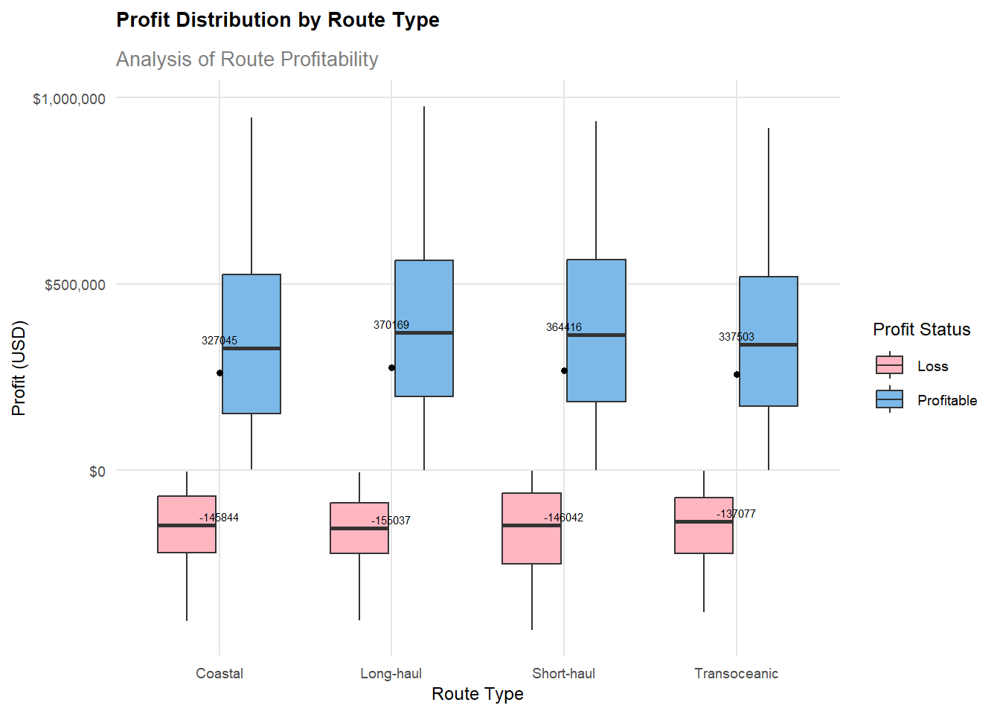
# Profit Distribution by Maintenance Status
ggplot(ship_data_clean, aes(x = Maintenance_Status, y = Profit_USD, fill = Profit_Status)) +
geom_boxplot() +
scale_fill_manual(values = palette_status) +
theme_custom +
labs(
title = "Profit Distribution by Maintenance Status",
subtitle = "Impact of Maintenance on Profitability",
x = "Maintenance Status",
y = "Profit (USD)",
fill = "Profit Status"
) +
scale_y_continuous(labels = scales::dollar_format()) +
stat_summary(fun = mean, geom = "point", shape = 20, size = 2, fill = "white") +
stat_summary(fun = median, geom = "text", aes(label = round(..y.., 0)), vjust = -0.5, color = "black", size = 2) # Adjusted size for median label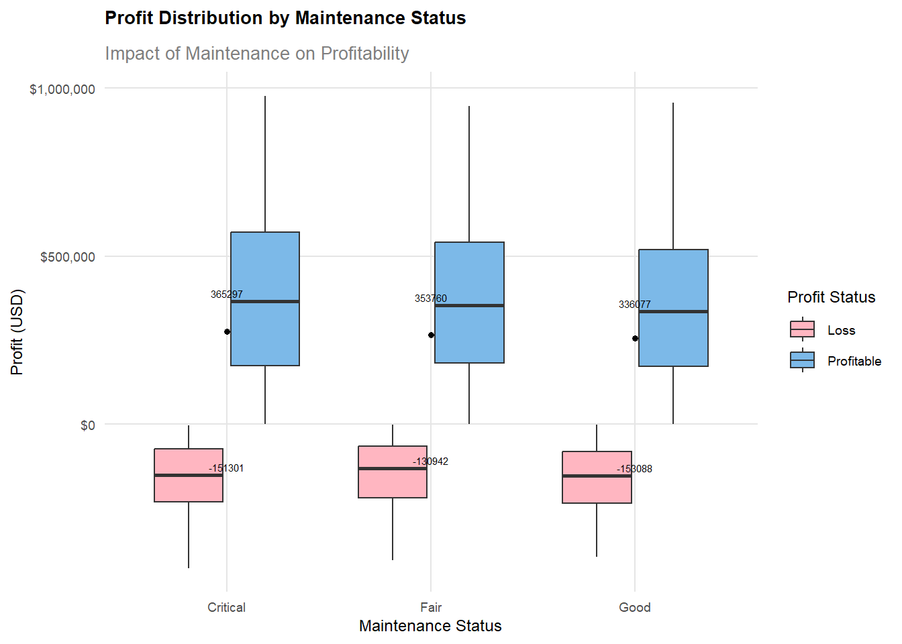
# Efficiency Analysis
ggplot(ship_data_clean, aes(x = Efficiency_nm_per_kWh, y = Profit_USD)) +
geom_density_2d_filled(alpha = 0.7) +
geom_smooth(color = "white", se = TRUE) +
facet_wrap(~Ship_Type) +
geom_hline(yintercept = 0, linetype = "dashed", color = "white") +
theme_custom +
labs(
title = "Efficiency vs Profit Density by Ship Type",
subtitle = "Relationship between Efficiency and Profitability",
x = "Efficiency (nm/kWh)",
y = "Profit (USD)"
) +
scale_y_continuous(labels = scales::dollar_format()) +
scale_fill_viridis_d()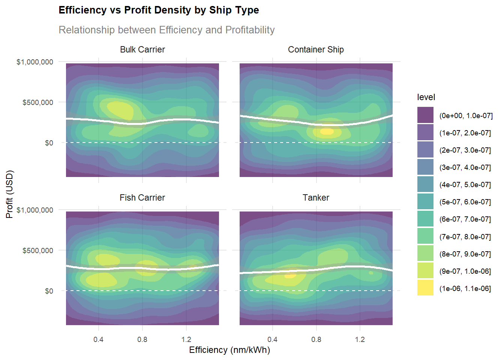
# Top Combinations Analysis
top_combinations <- ship_data_clean %>%
filter(!is.na(Ship_Type), !is.na(Engine_Type), !is.na(Route_Type), !is.na(Maintenance_Status), !is.na(Profit_USD)) %>%
group_by(Ship_Type, Engine_Type, Route_Type, Maintenance_Status) %>%
summarise(mean_profit = mean(Profit_USD, na.rm = TRUE), .groups = "drop") %>%
arrange(desc(mean_profit)) %>%
head(15)
ggplot(top_combinations,
aes(y = reorder(paste(Ship_Type, Engine_Type, Route_Type, Maintenance_Status), mean_profit),
x = mean_profit,
fill = mean_profit)) +
geom_col() +
scale_fill_gradient(low = "#7CB9E8", high = "#FFB6CE") +
theme_custom +
labs(
title = "Top 15 Most Profitable Combinations",
subtitle = "Analysis of Ship, Engine, Route, and Maintenance Combinations",
y = "Combination",
x = "Average Profit (USD)",
fill = "Average Profit"
) +
scale_x_continuous(labels = scales::dollar_format())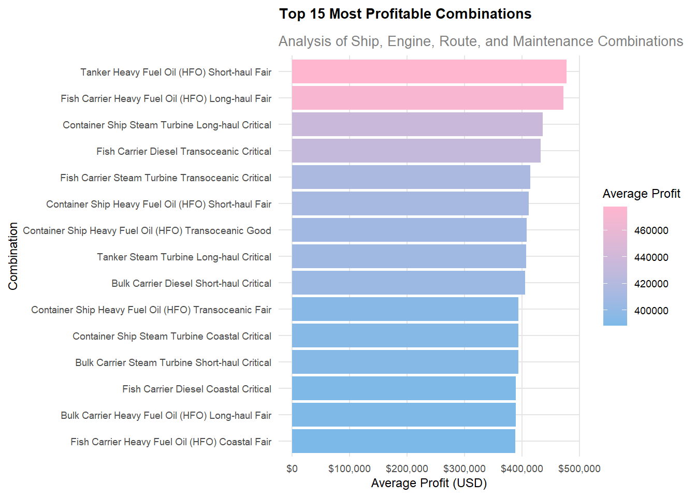
# Monthly Profit Trends
ggplot(ship_data_clean %>%
group_by(YearMonth, Ship_Type) %>%
summarise(avg_profit = mean(Profit_USD), .groups = "drop"),
aes(x = YearMonth, y = avg_profit, color = Ship_Type, group = Ship_Type)) +
geom_line(size = 1) +
geom_point(size = 2) +
scale_color_manual(values = palette_main) +
theme_custom +
labs(
title = "Monthly Profit Trends by Ship Type",
subtitle = "Average Monthly Profit Performance",
x = "Year-Month",
y = "Average Profit (USD)"
) +
scale_y_continuous(labels = scales::dollar_format()) 
# 安装patchwork包（如果尚未安装）
# install.packages("patchwork")
# 加载patchwork包
library(patchwork)# 修改了 vjust 参数以调整标签位置，并将字号设置为 2
p1 <- ggplot(ship_data_clean, aes(x = Maintenance_Status)) +
geom_bar(fill = "#7CB9E8", color = "white") +
theme_custom +
labs(
title = "Maintenance Status Distribution",
x = "Maintenance Status",
y = "Count"
) +
geom_text(stat = 'count', aes(label = ..count..), vjust = 1.5, size = 2) # 调整 vjust 和 size
p2 <- ggplot(ship_data_clean, aes(x = Engine_Type)) +
geom_bar(fill = "#B8B8FF", color = "white") +
theme_custom +
labs(
title = "Engine Type Distribution",
x = "Engine Type",
y = "Count"
) +
geom_text(stat = 'count', aes(label = ..count..), vjust = 1.5, size = 2) # 调整 vjust 和 size
p3 <- ggplot(ship_data_clean, aes(x = Ship_Type)) +
geom_bar(fill = "#FFE5B4", color = "white") +
theme_custom +
labs(
title = "Ship Type Distribution",
x = "Ship Type",
y = "Count"
) +
geom_text(stat = 'count', aes(label = ..count..), vjust = 1.5, size = 2) # 调整 vjust 和 size
p4 <- ggplot(ship_data_clean, aes(x = Route_Type)) +
geom_bar(fill = "#0077BE", color = "white") +
theme_custom +
labs(
title = "Route Type Distribution",
x = "Route Type",
y = "Count"
) +
geom_text(stat = 'count', aes(label = ..count..), vjust = 1.5, size = 2) # 调整 vjust 和 size
# 使用 patchwork 组合四张图
p1 + p2 + p3 + p4 +
plot_layout(ncol = 2) # 设置布局为2列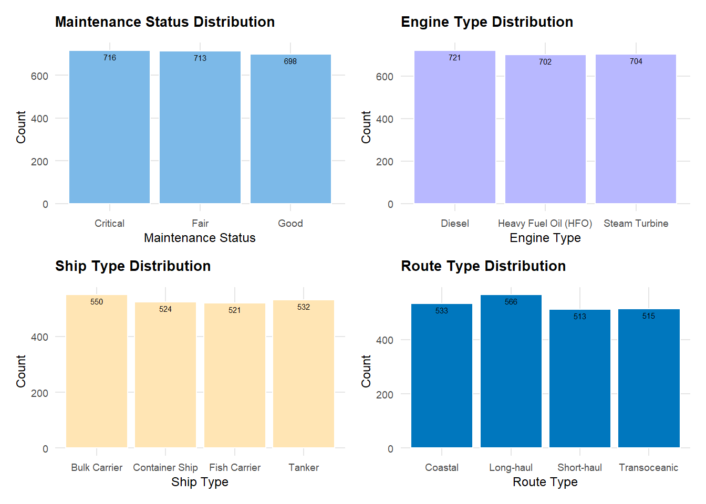
top_combinations_freq <- top_combinations %>%
gather(key = "Variable", value = "Value", Ship_Type, Engine_Type, Route_Type, Maintenance_Status) %>%
count(Variable, Value) %>%
arrange(desc(n))library(ggplot2)
library(dplyr)
library(tidyr)
# 计算组合的标准化频次
top_combinations <- ship_data_clean %>%
filter(!is.na(Ship_Type), !is.na(Engine_Type), !is.na(Route_Type), !is.na(Maintenance_Status), !is.na(Profit_USD)) %>%
group_by(Ship_Type, Engine_Type, Route_Type, Maintenance_Status) %>%
summarise(
mean_profit = mean(Profit_USD, na.rm = TRUE),
freq = n(),
.groups = "drop" # 避免分组输出警告
) %>%
arrange(desc(mean_profit))
# 计算标准化频次
top_combinations <- top_combinations %>%
mutate(
freq_std = (freq - mean(top_combinations$freq)) / sd(top_combinations$freq)
)
# 标准化后的Top15组合
top_15_after <- top_combinations %>%
arrange(desc(freq_std)) %>%
head(15)
# 将所有变量转换为长格式，用于频数的可视化
top_combinations_freq_after <- top_15_after %>%
gather(key = "Variable", value = "Value", Ship_Type, Engine_Type, Route_Type, Maintenance_Status) %>%
group_by(Variable, Value) %>%
summarise(n = n(), .groups = "drop") %>%
ungroup()
# 进行标准化频次处理
# 先将freq_std列按每个组合赋给对应的Value列
top_combinations_freq_after <- top_combinations_freq_after %>%
mutate(n = case_when(
Variable == "Ship_Type" ~ top_15_after$freq_std[match(Value, top_15_after$Ship_Type)],
Variable == "Engine_Type" ~ top_15_after$freq_std[match(Value, top_15_after$Engine_Type)],
Variable == "Route_Type" ~ top_15_after$freq_std[match(Value, top_15_after$Route_Type)],
Variable == "Maintenance_Status" ~ top_15_after$freq_std[match(Value, top_15_after$Maintenance_Status)],
TRUE ~ NA_real_
))top_combinations_freq_after <- top_15_after %>%
gather(key = "Variable", value = "Value", Ship_Type, Engine_Type, Route_Type, Maintenance_Status) %>%
group_by(Variable, Value) %>%
summarise(n = n(), .groups = "drop") %>%
ungroup() %>%
mutate(n = case_when(
Variable == "Ship_Type" ~ top_15_after$freq_std[match(Value, top_15_after$Ship_Type)],
Variable == "Engine_Type" ~ top_15_after$freq_std[match(Value, top_15_after$Engine_Type)],
Variable == "Route_Type" ~ top_15_after$freq_std[match(Value, top_15_after$Route_Type)],
Variable == "Maintenance_Status" ~ top_15_after$freq_std[match(Value, top_15_after$Maintenance_Status)],
TRUE ~ NA_real_
))# Frequency Analysis of Elements
ggplot(top_combinations_freq, aes(x = reorder(Value, n), y = n, fill = n)) +
geom_col() +
facet_wrap(~ Variable, scales = "free_x", ncol = 2) +
scale_fill_gradient(low = "#7CB9E8", high = "#FFB6CE") +
theme_custom +
labs(
title = "Frequency of Elements in Top Performing Combinations",
subtitle = "Analysis of Most Common Elements in Profitable Configurations",
x = "Element",
y = "Frequency",
fill = "Frequency"
) +
theme(axis.text.x = element_text(angle = 45, hjust = 1)) +
geom_text(aes(label = n), vjust = 1.2, size = 2)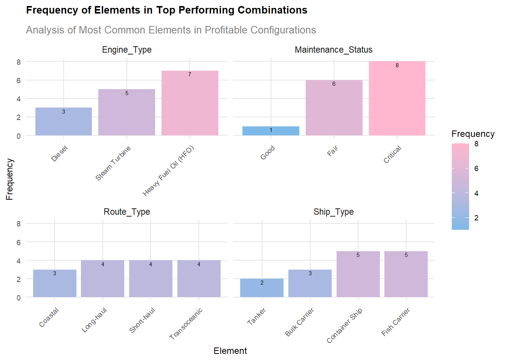
# Standardized Frequency Analysis
ggplot(top_combinations_freq_after, aes(x = reorder(Value, n), y = n, fill = n)) +
geom_col() +
facet_wrap(~ Variable, scales = "free_x", ncol = 2) +
scale_fill_gradient(low = "#7CB9E8", high = "#FFB6C1") +
theme_custom +
labs(
title = "Standardized Frequency Analysis of Top Combinations",
subtitle = "Distribution of Elements in Most Frequent Combinations",
x = "Element",
y = "Standardized Frequency",
fill = "Standardized Frequency"
) +
geom_text(aes(label = round(n, 2)), vjust = 2, size = 2)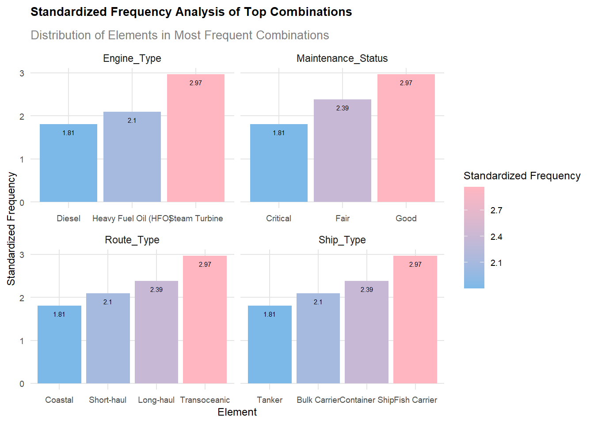
# Additional Analysis: Efficiency Distribution
ggplot(ship_data_clean, aes(x = Ship_Type, y = Efficiency_nm_per_kWh, fill = Ship_Type)) +
geom_violin(alpha = 0.7) +
geom_boxplot(width = 0.2, alpha = 0.7) +
scale_fill_manual(values = palette_main) +
theme_custom +
labs(
title = "Efficiency Distribution by Ship Type",
subtitle = "Violin Plot with Embedded Box Plot",
x = "Ship Type",
y = "Efficiency (nm/kWh)"
) +
theme(legend.position = "none") +
stat_summary(fun = mean, geom = "point", shape = 20, size = 2, fill = "white")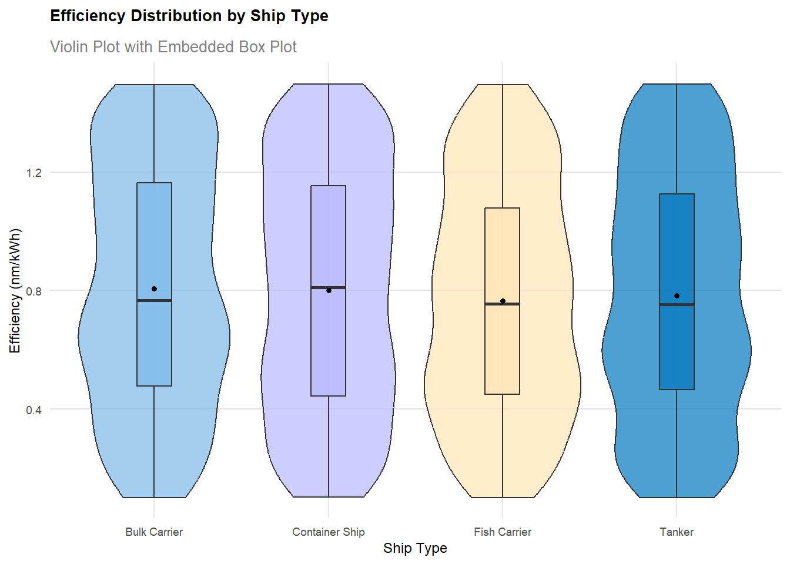